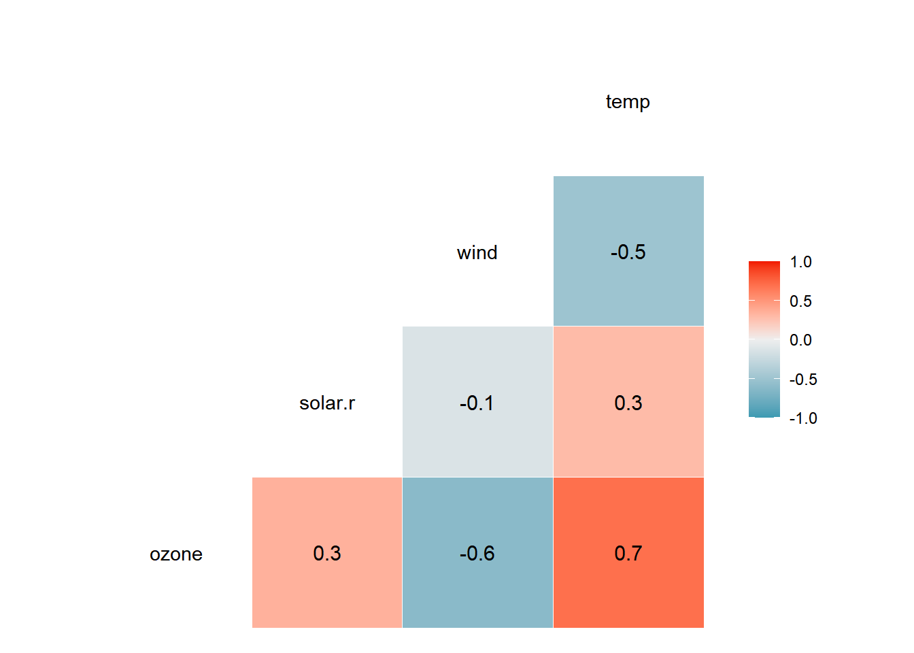
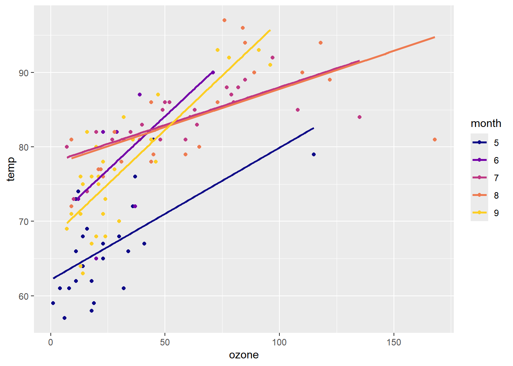
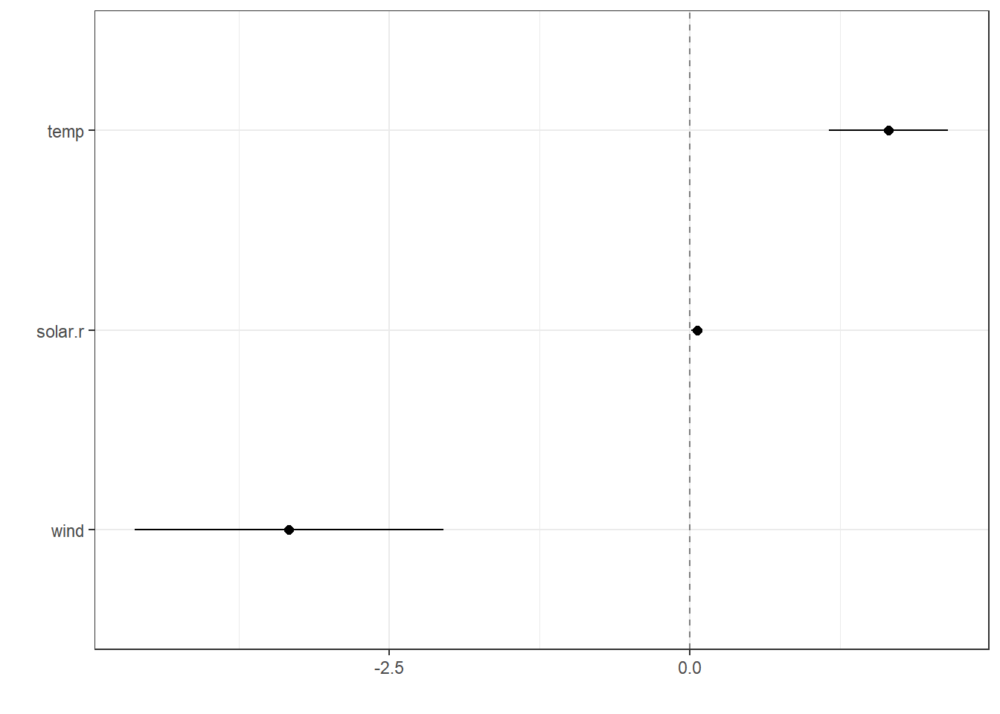

ozone solar.r wind temp month
Min. : 1.0 Min. : 7.0 Min. : 2.30 Min. :57.00 5:24
1st Qu.: 18.0 1st Qu.:113.5 1st Qu.: 7.40 1st Qu.:71.00 6: 9
Median : 31.0 Median :207.0 Median : 9.70 Median :79.00 7:26
Mean : 42.1 Mean :184.8 Mean : 9.94 Mean :77.79 8:23
3rd Qu.: 62.0 3rd Qu.:255.5 3rd Qu.:11.50 3rd Qu.:84.50 9:29
Max. :168.0 Max. :334.0 Max. :20.70 Max. :97.00
ggcorr(air, palette ="RdBu", label =TRUE)
Warning in ggcorr(air, palette = "RdBu", label = TRUE): data in column(s)
'month' are not numeric and were ignored

air %>%ggplot(aes(x = ozone,y = temp,col = month,group = month )) +geom_point() +geom_smooth(method = lm, se = F) +scale_color_viridis_d(option ="C", end = .9)
`geom_smooth()` using formula = 'y ~ x'

Selekcja zmiennych
W poniższym kodzie, przy pomocy funkcji wykonującej algorytm Hellwiga, porównano dla każdej ze zmiennych w zestawie wszystkie potencjalne kombinacje zmiennych objaśniających. W kodzie wykorzystano funkcję hellwig() pobraną z github.
W wyniku wybrano następującą kombinację do dalszej analizy z uwagi na największą pojemność informacyjną zmiennych objasniających:
hellwig <-function(y, x, method ="pearson") {requireNamespace("utils")# Ensure 'x' is numeric x <- x[sapply(x, is.numeric)] x <-as.data.frame(x)# Calculate correlation matrix cm <- stats::cor(x, method = method) cd <- stats::cor(x, y, method = method) k <-sapply(seq(2, ncol(x)), function(i) utils::combn(ncol(x), i, simplify =FALSE)) k <-do.call("c", k) hfun <-function(v) {sapply(v, function(i) cd[i]^2/sum(abs(cm[v, i]))) } h <-sapply(k, hfun) result <-data.frame(k =sapply(k, function(comb) paste(names(x)[comb], collapse ="-")),h =sapply(h, sum),stringsAsFactors =FALSE ) result[which.max(result$h), ]}# Generalized loop for all target variablestarget_vars <-c("wind", "ozone", "solar.r", "temp")predictor_sets <-lapply(target_vars, function(var) setdiff(names(air), var))# Ensure all predictors are numericnumeric_predictors <-lapply(predictor_sets, function(predictors) { predictors[sapply(air[predictors], is.numeric)]})# Generate models dynamically for all target variablesmodels <-lapply(seq_along(target_vars), function(i) { best_model <-hellwig(air[[target_vars[i]]], air[, numeric_predictors[[i]]], method ="pearson") best_model$target <- target_vars[i] best_model})# Combine the results into one data framecombined_models <-do.call(rbind, models)names(combined_models) <-c("k", "h", "target")print(combined_models)
k h target
2 ozone-temp 0.3664024 wind
4 solar.r-wind-temp 0.5887366 ozone
21 ozone-temp 0.1223576 solar.r
22 ozone-wind 0.4559127 temp
Budowa modelu
W poniższym kodzie utworzono model szacujący ilość ozonu w atmosferze na podstawie zmiennych oznaczających ilość promieniowania słonecznego, wiatru i temperatury. Badanie istotności zmiennych wykazało, że każda z dobranych zmiennych jest istotna dla modelu na poziomie istotności poniżej 0.01.
linear_reg() |>set_engine("keras")
Linear Regression Model Specification (regression)
Computational engine: keras
Call:
stats::lm(formula = ozone ~ temp + solar.r + wind, data = data)
Residuals:
Min 1Q Median 3Q Max
-40.485 -14.219 -3.551 10.097 95.619
Coefficients:
Estimate Std. Error t value Pr(>|t|)
(Intercept) -64.34208 23.05472 -2.791 0.00623 **
temp 1.65209 0.25353 6.516 2.42e-09 ***
solar.r 0.05982 0.02319 2.580 0.01124 *
wind -3.33359 0.65441 -5.094 1.52e-06 ***
---
Signif. codes: 0 '***' 0.001 '**' 0.01 '*' 0.05 '.' 0.1 ' ' 1
Residual standard error: 21.18 on 107 degrees of freedom
Multiple R-squared: 0.6059, Adjusted R-squared: 0.5948
F-statistic: 54.83 on 3 and 107 DF, p-value: < 2.2e-16
Analiza przedziałów ufności dopasowania modelu
Z analizy wykresu przedstawiającego przedziały ufności dla istotności każdej ze zmiennych wynika, że wiatr oraz temperatura mają największy wpływ na poziom ozonu (ceteris paribus).
lm_fit |>tidy() |>dwplot(vline =geom_vline(xintercept =0, color ="grey50", linetype =2), dot_args =list(size =2, color ="black"), whisker_args =list(color ="black")) +theme_bw()

Prognozowanie
Z zaprezentowanej prognozy wynika, że wzrost temperatury prognoza powoduje wzrost ilości ozonu w atmosferze. Jednocześnie wzrost prędkości wiatru obniża jego poziom.
Należy jednak zauważyć, że model zwraca także wartości ujemne w przypadku skrajnych wartości (np. dla prędkości wiatru na poziomie 100 km/h oraz temperatury a poziomie 100°C). Model należy zatem poddać dalszej analizie lub rozszerzyć zestaw uczący o dodatkowe obserwacje.